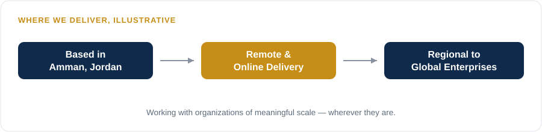
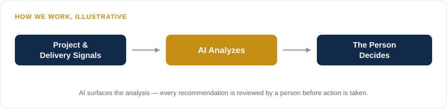

NextEmTech
Next Emerging Technology
Intelligent transformation consulting and training, grounded in real delivery experience.

Deeb Haddad
Founder & AI and Intelligent Transformation Lead
Certified trainer and consultant (PMP, CPMAI) specializing in AI adoption, project management, and digital transformation. Works with cross-functional teams to deliver scalable, technology-driven, value-focused outcomes — always keeping people in control of AI-assisted decisions.
NextEmTech was founded in 2025 as a group of professionals and transformation catalysts based in Amman, Jordan, working across project management, AI, and intelligent transformation. The practice is led by Deeb Haddad, co-founder, a certified trainer and consultant with expertise in CPMAI and AI strategy.
Work is delivered as a consultant and coach, contracted through training centers and Authorized Training Partners (ATPs), in both Arabic and English professional contexts — covering consulting engagements on intelligent transformation and AI adoption, and certification training for project managers, PMO professionals, and technology leaders.
Engagements are delivered remotely and online, working with organizations of meaningful scale — from regional institutions to global enterprises.

AI provides the analysis. The person owns the decision.
That principle shapes every engagement: AI is treated as a tool for surfacing better decisions, not a replacement for the judgment and accountability of the people running the program.
